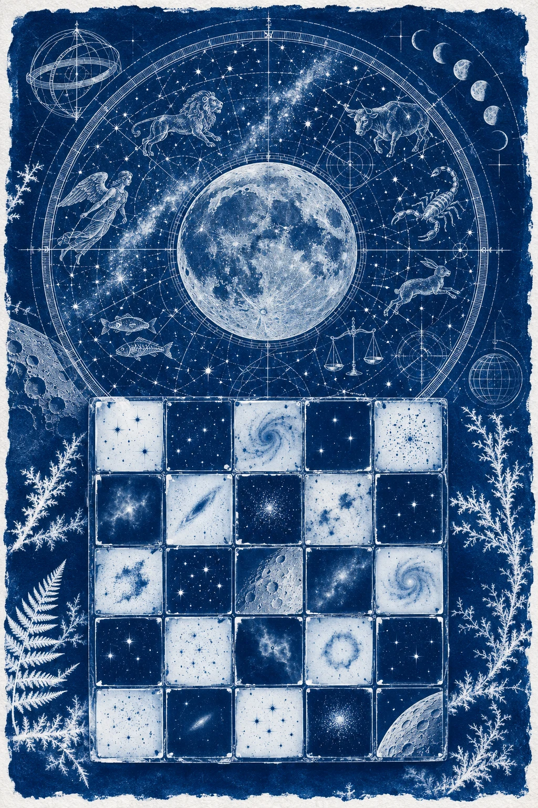

光留下的，都是星辰。天文藍曬 · 十字翻燈解謎
靛藍暗房星圖顯影
輕觸一格，翻轉自身與上下左右。
讓每片底片都顯影，拼回完整星圖。
無倒數・可悔步・提示不代走
星圖顯影
已顯影 00 / 16曝光次數 000提示 00
翻轉自身與上下左右；讓全盤都出現白色「＋」。
白色＋ 已顯影深藍− 未顯影
點一格試試；再點同格即可還原。
方向鍵選格 · Enter 翻轉 · Z 悔步 · H 提示 · P 暫停

光留下的，都是星辰。天文藍曬 · 十字翻燈解謎
輕觸一格，翻轉自身與上下左右。
讓每片底片都顯影，拼回完整星圖。
無倒數・可悔步・提示不代走
翻轉自身與上下左右；讓全盤都出現白色「＋」。
點一格試試；再點同格即可還原。
方向鍵選格 · Enter 翻轉 · Z 悔步 · H 提示 · P 暫停